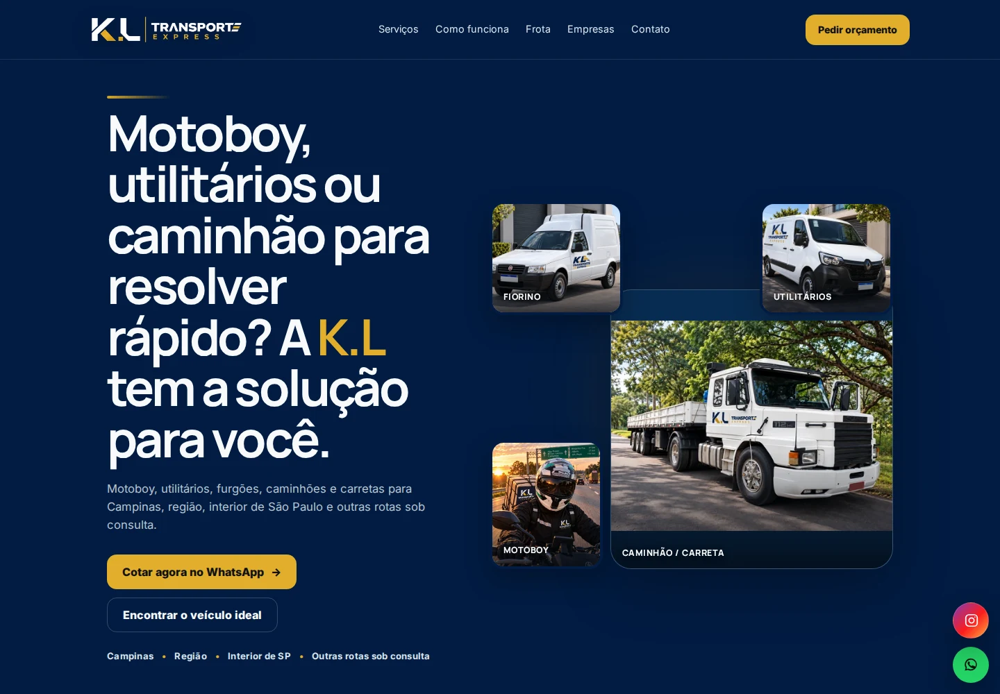

PROJETO REAL · NO AR
K.L Transporte Express
Transporte e logística
Estrutura digital criada para transformar buscas locais em pedidos de orçamento e apresentar com clareza uma operação que atende da moto à carreta.
O site como produto
kltransporteexpress.com.br

Captura real · site publicado
Desafio e estratégia OT
Projeto real · Transporte e logística
- Desafio
- Mostrar amplitude operacional sem parecer apenas motoboy e ganhar presença nas buscas locais.
- Estratégia OT
- Arquitetura comercial + páginas SEO + Google Business + dados + cotação no WhatsApp.
- Site oficial responsivo e domínio próprio
- Cotação integrada ao WhatsApp
- SEO local para Campinas e região
- Google Business + Search Console
- Google Analytics GA4
- Páginas para motoboy, Fiorino e transporte de cargas